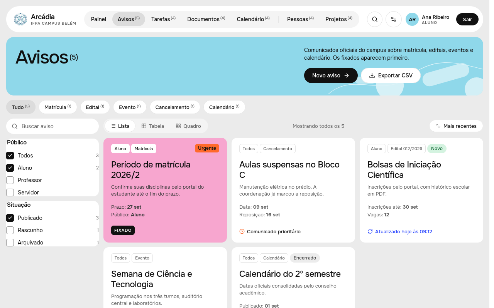
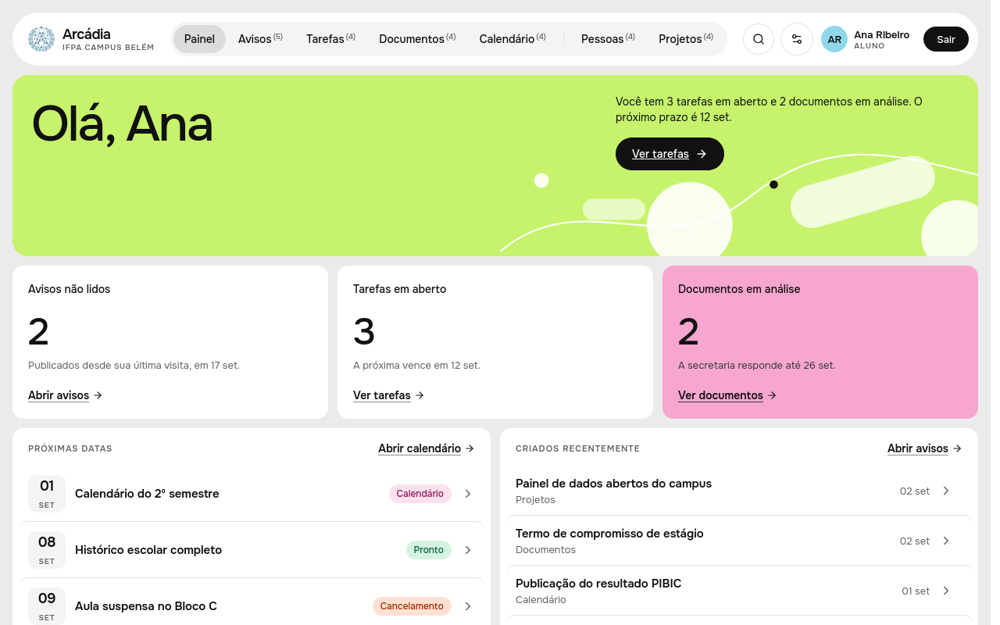
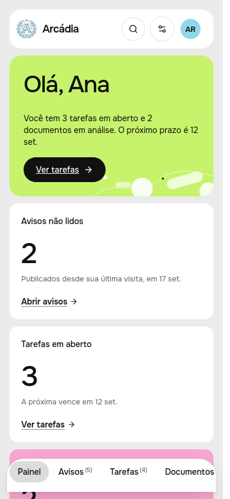
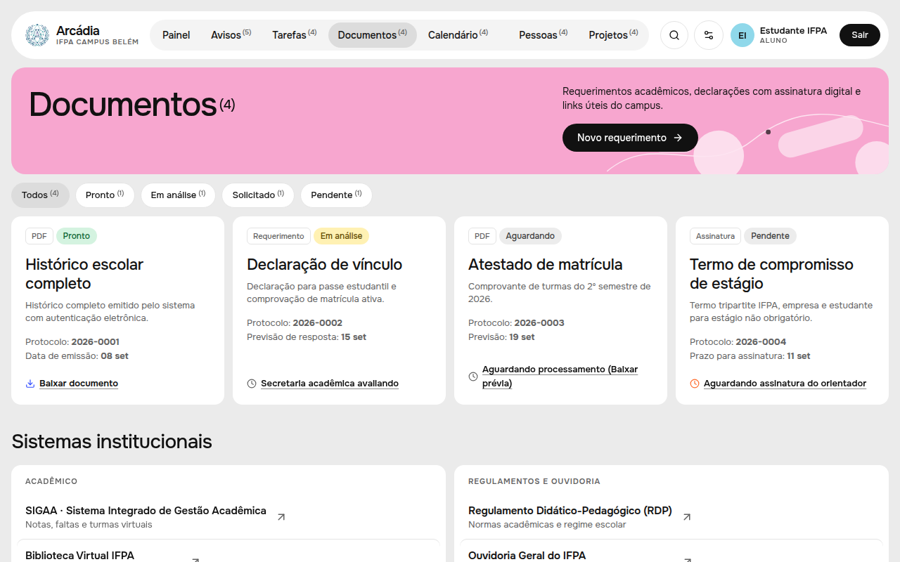
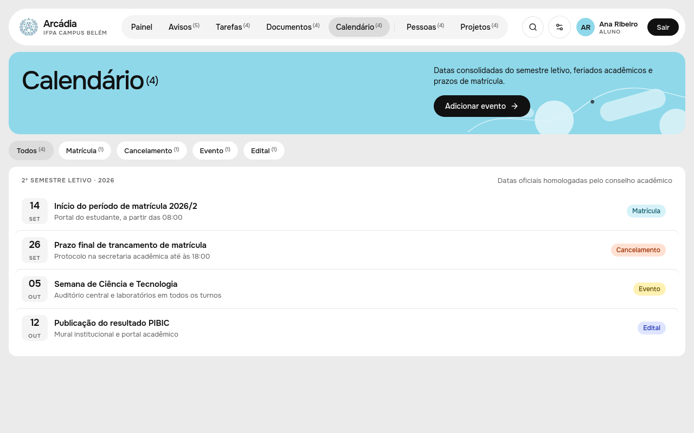
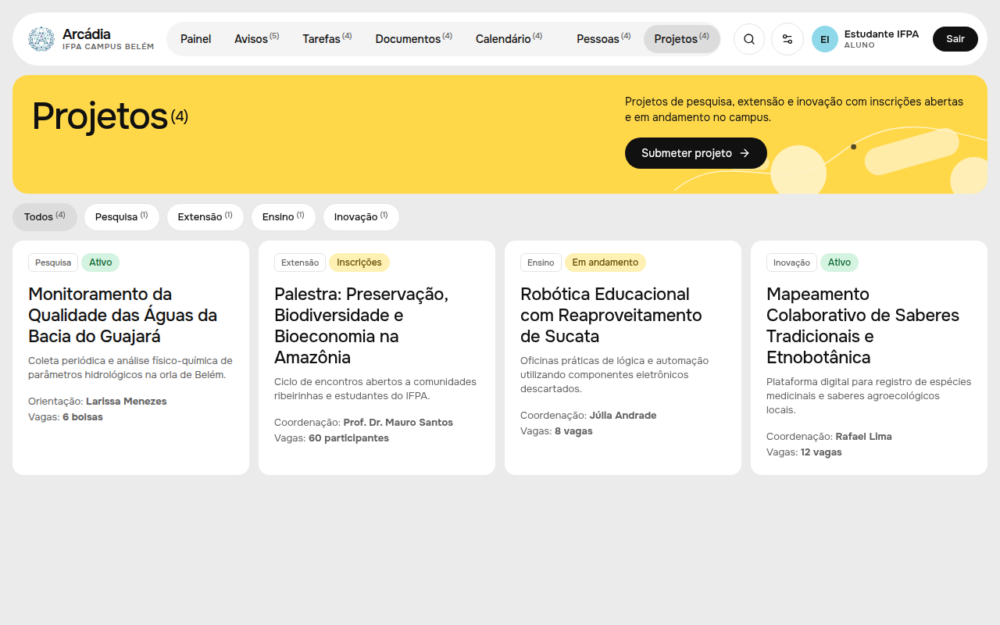

Mural oficial
Avisos e notificações em tempo real
Publicações diretas da secretaria acadêmica e da coordenação: confirmação de turmas, cancelamentos urgentes e cronogramas de matrícula.

Editais, matrículas, calendário, documentos e projetos do seu campus, com data, categoria e público. Num lugar só.
Grátis para discentes, docentes e servidores com e-mail institucional.

avisos entregues sem repetir a publicação em outro canal.
do envio da secretaria à publicação no mural.
abriram o mural na semana de provas.
Veja o que você encontra ao entrar: cada recurso com um exemplo de como ele aparece na tela.
Publicações diretas da secretaria acadêmica e da coordenação: confirmação de turmas, cancelamentos urgentes e cronogramas de matrícula.

Aluno, professor ou servidor: o mural reordena as publicações pelo vínculo confirmado pela secretaria.

Requerimentos, trancamento de matrícula, histórico escolar e atestados com download rápido, sem filas.

Provas, reposições e eventos do semestre publicados pela própria secretaria.

Bolsas PIBIC, feiras de robótica maker, grupos de pesquisa e projetos de extensão do campus.

Cada vínculo vê primeiro o que importa para ele, sem garimpar avisos que não são seus.
Prazos, bolsas e datas do seu curso sem depender do grupo da turma.
Chamadas, prazos e mudanças de calendário que afetam as suas turmas.
Fluxos internos e documentos da gestão do campus num só lugar.
Sem burocracia: quem confirma o seu vínculo é a própria secretaria.
Cadastre-se com o seu e-mail institucional do IFPA. É grátis.
Discente, docente ou servidor: a verificação é feita pela própria secretaria.
Avisos, prazos e documentos aparecem organizados pelo seu vínculo, no computador ou no celular.
Não encontrou o que procurava? Escreva para a secretaria:
secretaria.belem@ifpa.edu.brDiscentes, docentes e servidores do IFPA Campus Belém. Basta ter um e-mail institucional para criar a conta.
Não. A Arcádia é uma plataforma institucional 100% gratuita desenvolvida para atender toda a comunidade do campus.
Ao se cadastrar com o seu e-mail institucional, a própria secretaria acadêmica valida o seu curso, matrícula ou cargo no sistema interno.
Não. O SIGAA continua sendo o sistema acadêmico oficial para lançamento de notas e histórico. A Arcádia centraliza a comunicação, editais e avisos em tempo real.
Sim. O portal é totalmente responsivo e foi construído com navegação ágil para smartphones, sem necessidade de baixar aplicativos externos.
Grátis com e-mail institucional. A verificação de vínculo é feita pela própria secretaria.